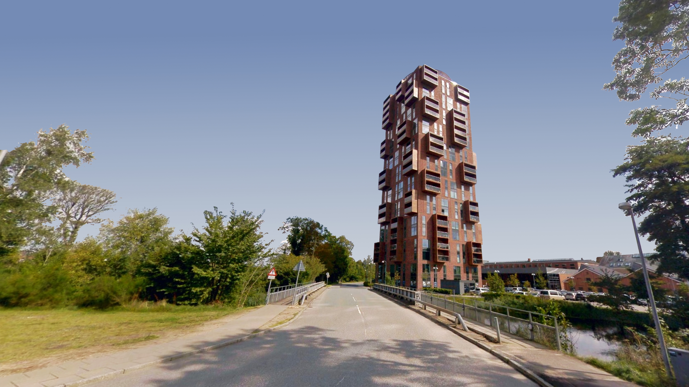

Papirtårnet
Papirtårnet er et af Silkeborgs mest ikoniske steder. Her kan man opleve en fantastisk udsigt over byen og området omkring.

Papirtårnet er et af Silkeborgs mest ikoniske steder. Her kan man opleve en fantastisk udsigt over byen og området omkring.